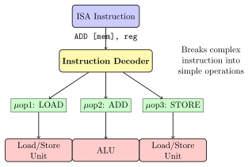
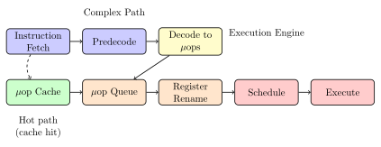
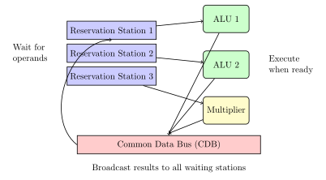
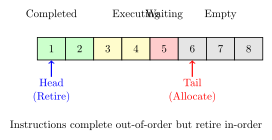

Chapter 8: Microoperations: Breaking Down Instructions¶
Beneath the ISA level, modern processors break complex instructions into simpler microoperations (micro-ops or μops). This chapter explores how CPUs decompose and execute instructions at the most fundamental level of control.
8.1 Why Microoperations?¶
Complex ISA instructions often do multiple things:
; This single instruction does multiple operations:
ADD [RBX + RCX*4 + 0x100], RAX
; It actually performs:
; 1. Calculate address: RBX + RCX*4 + 0x100
; 2. Load value from memory
; 3. Add RAX to loaded value
; 4. Store result back to memory
Breaking this into micro-ops allows: - Simpler hardware units - Better pipelining - More parallelism - Easier out-of-order execution
8.2 The Microarchitecture Level¶

8.3 Microoperation Examples¶
8.3.1 CISC to RISC-like Micro-ops¶
Solved Problem
Decomposing Complex Instructions
Problem: Show how complex x86 instructions decompose into micro-ops.
Solution:
// Example 1: Memory-to-memory move
MOV [RDI], [RSI]
// Decomposes to:
μop1: LOAD_TEMP ← [RSI] // Load from source
μop2: STORE [RDI] ← LOAD_TEMP // Store to destination
// Example 2: Push operation
PUSH RAX
// Decomposes to:
μop1: SUB RSP, 8 // Decrement stack pointer
μop2: STORE [RSP] ← RAX // Store value
// Example 3: Complex addressing with operation
ADD EAX, [RBX + RCX*4 + 0x100]
// Decomposes to:
μop1: CALC_ADDR ← RBX + (RCX << 2) + 0x100 // Address calculation
μop2: LOAD_TEMP ← [CALC_ADDR] // Load from memory
μop3: ADD EAX ← EAX + LOAD_TEMP // Perform addition
// Example 4: Call instruction
CALL function
// Decomposes to:
μop1: SUB RSP, 8 // Adjust stack
μop2: STORE [RSP] ← RIP + 5 // Save return address
μop3: JMP function // Jump to function
8.4 The Micro-op Pipeline¶
Modern Intel processors use a dual pipeline:

8.5 Register Renaming¶
Register renaming eliminates false dependencies:
8.5.1 The Problem: False Dependencies¶
// Original code with false dependency:
MOV RAX, [mem1] // RAX = memory[mem1]
ADD RBX, RAX // RBX = RBX + RAX
MOV RAX, [mem2] // RAX = memory[mem2] (reuses RAX)
ADD RCX, RAX // RCX = RCX + RAX
// The second pair doesn't really depend on the first,
// but reusing RAX creates a false dependency
8.5.2 The Solution: Physical Registers¶
// After renaming (using physical registers P0-P99):
MOV P37, [mem1] // Map RAX to P37
ADD P42, P42, P37 // RBX was P42
MOV P51, [mem2] // Map RAX to P51 (different physical register!)
ADD P43, P43, P51 // RCX was P43
// Now the two pairs can execute in parallel!
Practical Example
Register Renaming Table:
| Architectural Register | Physical Register | Status |
|---|---|---|
| RAX | P51 | Valid |
| RBX | P42 | Valid |
| RCX | P43 | Valid |
| RDX | P18 | Valid |
| ... | ... | ... |
| Old RAX | P37 | Will be freed |
The CPU maintains many more physical registers (e.g., 180) than architectural registers (16 general-purpose in x86-64).
8.6 Out-of-Order Execution Engine¶
8.6.1 Tomasulo’s Algorithm¶
A key algorithm for dynamic scheduling:

8.6.2 Reservation Stations¶
Each reservation station tracks:
struct ReservationStation {
bool busy; // Is this station in use?
Operation op; // What operation to perform
Value Vj, Vk; // Operand values (if ready)
Station Qj, Qk; // Where operands come from (if not ready)
int destination; // Where to send result
};
8.7 Micro-op Scheduling¶
8.7.1 Issue Logic¶
The scheduler must decide which micro-ops to execute:
for each execution_unit {
ready_uops = find_all_ready_uops_for_unit();
if (ready_uops.not_empty()) {
selected = pick_oldest(ready_uops); // Age-based priority
issue_to_unit(selected, execution_unit);
}
}
// A uop is ready when:
// 1. All source operands are available
// 2. Execution unit is free
// 3. No memory ordering violations
8.7.2 Execution Units¶
Modern CPUs have multiple specialized units:
| Unit Type | Operations | Latency |
|---|---|---|
| Simple ALU | ADD, SUB, AND, OR, XOR | 1 cycle |
| Complex ALU | MUL, IMUL | 3-4 cycles |
| Divider | DIV, IDIV | 20-80 cycles |
| Load Unit | Load from memory | 4-400 cycles |
| Store Unit | Store to memory | 4-40 cycles |
| Branch Unit | JMP, Jcc, CALL, RET | 1 cycle |
| SIMD Unit | Vector operations | 1-5 cycles |
| FPU | Floating-point ops | 3-5 cycles |
8.8 Reorder Buffer (ROB)¶
The ROB ensures in-order retirement despite out-of-order execution:

Solved Problem
ROB Example
Problem: Show how the ROB handles out-of-order completion.
Solution:
// Original program order:
1: LOAD R1, [mem1] // Slow - cache miss
2: ADD R2, R3, R4 // Fast
3: MUL R5, R6, R7 // Medium
4: STORE [mem2], R2 // Depends on instruction 2
// ROB allocation (in order):
ROB[0]: LOAD R1, [mem1] - Status: Waiting
ROB[1]: ADD R2, R3, R4 - Status: Waiting
ROB[2]: MUL R5, R6, R7 - Status: Waiting
ROB[3]: STORE [mem2], R2 - Status: Waiting
// After some cycles (out-of-order completion):
ROB[0]: LOAD R1, [mem1] - Status: Executing (slow)
ROB[1]: ADD R2, R3, R4 - Status: COMPLETED ✓
ROB[2]: MUL R5, R6, R7 - Status: COMPLETED ✓
ROB[3]: STORE [mem2], R2 - Status: COMPLETED ✓
// But retirement must wait:
// Cannot retire ROB[1] until ROB[0] completes
// This maintains precise exceptions and correct program state
8.9 Memory Ordering¶
Memory operations require special handling:
8.9.1 Load-Store Queue¶
struct LoadStoreQueue {
// Loads can proceed speculatively
LoadEntry loads[32];
// Stores must wait until retirement
StoreEntry stores[16];
// Check for conflicts
bool check_dependency(Load ld, Store st) {
return (ld.address == st.address &&
ld.program_order > st.program_order);
}
};
// Store-to-load forwarding:
// If a load depends on a pending store,
// forward the data directly without going to memory
8.10 Speculative Execution¶
CPUs execute beyond branches speculatively:
8.10.1 Branch Prediction and Speculation¶
// Code with branch:
if (condition) { // CPU predicts this is true
result = a + b; // Executes speculatively
value = c * d; // Also speculative
} else {
result = a - b; // Not executed (predicted not taken)
}
use(result); // Depends on speculation
// If prediction correct: Continue normally
// If mispredicted:
// 1. Flush speculative instructions
// 2. Restore architectural state
// 3. Restart from correct path
8.10.2 Checkpoint and Recovery¶
Real-World Analogy
Speculative execution is like taking notes in pencil:
-
Speculation: Write answers in pencil (temporary)
-
Verification: Check if answers are correct
-
Commit: Trace over in pen (permanent)
-
Rollback: Erase and redo if wrong
The ROB acts as the "pencil" buffer, holding results until they’re confirmed.
8.11 Performance Monitoring¶
Modern CPUs provide counters to observe micro-ops:
Practical Example
Using Performance Counters:
# Count micro-ops issued and retired
$ perf stat -e uops_issued.any,uops_retired.all ./program
Performance counter stats for './program':
1,234,567,890 uops_issued.any
1,234,567,000 uops_retired.all
# The difference shows speculative waste
# Detailed pipeline analysis
$ perf stat -e cycles,instructions,uops_issued.any,\\
uops_retired.all,br_misp_retired.all ./program
# Intel VTune for deeper analysis
$ vtune -collect uarch-exploration ./program
8.12 Real Example: Intel Skylake¶
Let’s trace our addition through Skylake microarchitecture:
, reg]
// Original instruction:
ADD [RBX + 0x10], RAX
// Micro-op breakdown:
μop1: LOAD_TEMP ← [RBX + 0x10] // Load from memory
μop2: ADD_TEMP ← LOAD_TEMP + RAX // Add operation
μop3: STORE [RBX + 0x10] ← ADD_TEMP // Store back
// Pipeline execution:
Cycle 1: Decode instruction → 3 μops
Cycle 2: Rename registers, allocate ROB entries
Cycle 3: Issue μop1 to load unit
Cycle 4-7: Load executes (assuming L1 cache hit)
Cycle 8: μop1 completes, μop2 can now issue
Cycle 9: μop2 executes in ALU (1 cycle)
Cycle 10: μop3 issues to store unit
Cycle 11: Store completes
Cycle 12: All μops retired in order
// Total: ~12 cycles for one complex instruction
// But with pipelining, throughput can be 1 per cycle!
8.13 Exercises¶
Exercise for You
Exercise 8.1: Micro-op Decomposition
Decompose these x86-64 instructions into micro-ops: 1. XCHG RAX, RBX (exchange registers) 2. CALL function (function call) 3. REP MOVSB (string copy) 4. CMPXCHG [mem], reg (atomic compare-exchange)
Explain why each decomposition is necessary.
Exercise for You
Exercise 8.2: ROB Simulation
Write a simulator for a reorder buffer that: 1. Accepts instructions in program order 2. Executes them with random latencies 3. Handles data dependencies 4. Retires in order 5. Demonstrates speculative execution
Test with various instruction sequences.
Exercise for You
Exercise 8.3: Performance Analysis
Using performance counters: 1. Measure micro-ops for different code patterns 2. Compare complex vs simple instructions 3. Measure speculation waste 4. Analyze branch misprediction impact 5. Create a report with recommendations
8.14 Chapter Summary¶
Microoperations are the atoms of CPU execution:
-
Decomposition: Complex instructions become simple μops
-
Renaming: Eliminates false dependencies
-
Scheduling: Dynamic selection of ready operations
-
Speculation: Execution beyond branches
-
Reordering: Out-of-order execution, in-order retirement
-
Forwarding: Direct data paths between operations
Our simple addition, now broken into load-add-store micro-ops, can execute in parallel with other operations, speculatively beyond branches, with its results forwarded directly to dependent operations - all while maintaining the illusion of simple sequential execution.
Key Takeaway
Key Insight: The microarchitecture level is where the real magic happens - complex scheduling algorithms and speculative execution extract maximum performance while preserving the simple programming model of the ISA.
Next: Chapter 9 - Register Transfer Level: Hardware Design Language